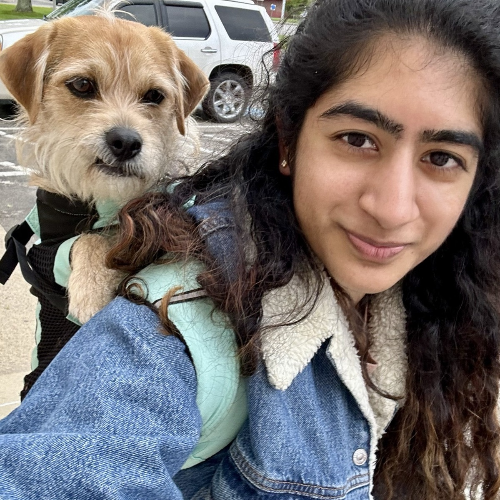

aditi srinivasan

Software engineer. Continually learning™, always looking for new challenges. Interested in AI x physical world.

Software engineer. Continually learning™, always looking for new challenges. Interested in AI x physical world.